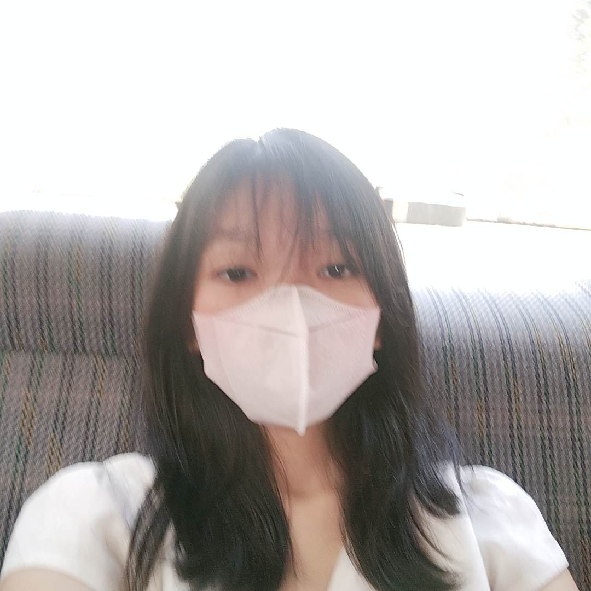
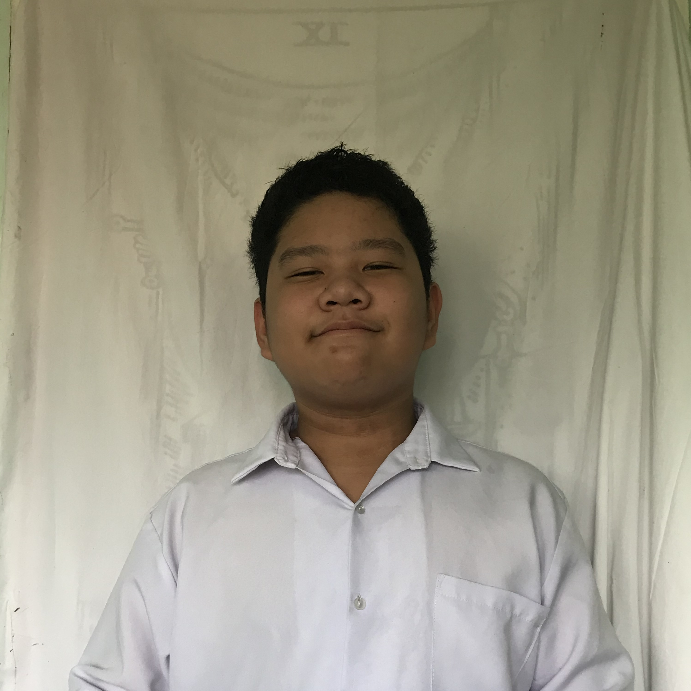

Talikala Inc. is a nongovernmental organization run by women to serve women, where its mission and advocacy is all about helping sexually exploited women. However, we have noticed that Talikala doesn’t get much recognition from the public, which we think is hindering them from achieving their goals. Our project, titled Project L.I.F.E. (Live in Freedom from Exploitation) aims to promote Talikala, their mission and advocacy to local communities and all women victims of sexual exploitation. Additionally, by promoting Talikala, we are also raising public awareness of the issue of sexual exploitation.
Problem Statement
An issue that Talikala, Inc. is facing that needs to be addressed is the lack of awareness people have for the institution. This is a very problematic issue for Talikala as it means that only a limited number of people are aware of their existence and advocacy, which also means that only a limited number of exploited women are reaching out to them and the issue of exploitation and abuse is still happening. The lack of women reaching out to Talikala can hinder them (the institution) from achieving their goal of improving the lives of as many women prostitutes and survivors of prostitution as they can reach. One way that this issue can be addressed is if the institution becomes more popular, and this can be achieved by means that its existence and advocacy are promoted on various online media platforms; for people to be reminded of how alarming the issue of exploitation and abuse is and how beneficial Talikala can be in resolving those issues.
Proposed Project
In order to address this issue we can spread awareness in the Talikala inc. project through social media platforms, posters, and leaflets because doing so it will inform the public of the signs to look out for victims of women prostitutes and this might be able to help women prostitutes to open up more and won’t be scared to reach out for other’s help. The proposed project that was stated can help the partnered institution like was said, spreading awareness because in doing so not only does it help the victims, but it will also help widen the influence of Talikala inc. for them to spread caution to avoid more victims of women's prostitution. The project name of our project is LIFE (Live in Freedom from Exploitation). The project aims to promote our partner institution, Talikala Inc., its mission and advocacy to local communities and all women victims of sexual exploitation. The main goal of the project is to successfully promote Talikala Inc. and to make them well known. Promoting the institution can help more women, improve their institution, aid employee engagement, boost employee morale, and can ultimately improve productivity. The specific objectives of our project include: creating a fully functioning and clean website that can successfully promote Talikala Inc, to be able to spread said website through social media, to be able to create posters that can successfully promote Talikala Inc., to be able to put these posters in poor areas or areas with many people and to be able to create leaflets that can successfully promote Talikala Inc.
Significance of the Project
If our project is successfully implemented, it will convince the people in Talikala that they can continue to uphold their advocacy much more efficiently. Furthermore, it will allow them to enlighten the public on the issue of sexual exploitation, and potentially change the public’s perception of the issue. Through our project, Talikala can convince the public that sexual exploitation and the elements around it are much more complicated that it seems, and that it is far from being a one-sided discussion. As a result of the project, the public will realize how problematic the issue is, and how important Talikala can be in resolving the issue.

Alyssa Vida
Student (Web designer)
Alyssa Vida was born in Davao City, together with her family of 6. Along with her school work, she’s also a part of the Red Cross Youth (RCY) club. She’s planning to take stem, specifically science. As she wanted to be an internal medicine doctor in the future. She’s a girl who has many big dreams she wanna achieve while enjoying her teen life by doing her hobbies and having fun with her friends.
aevida@addu.edu.ph

Baraq Sanlocan
Student (Web designer)
This is Baraq M. Sanlocan he grew up in Cotabato city from birth to 12 years old. He went to school at the age of 4 in the school of St. Benedict college for kindergarten and at the age of 6, he switched schools at Cotabato Sacred Heart Learning Center. After he graduated from elementary school he went to Davao because of the lockdown. His dream is to become an engineer. He likes sports such as badminton and likes to play online games, he also likes cats, and his interests are more on the topic of space.